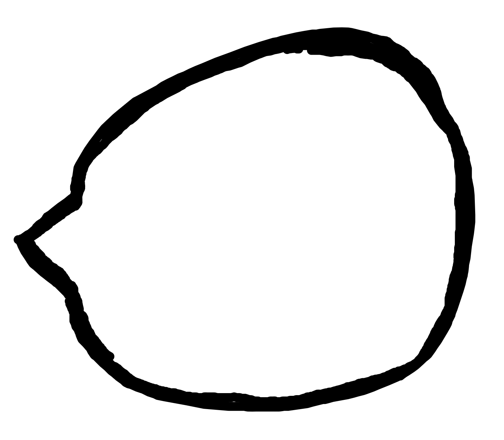
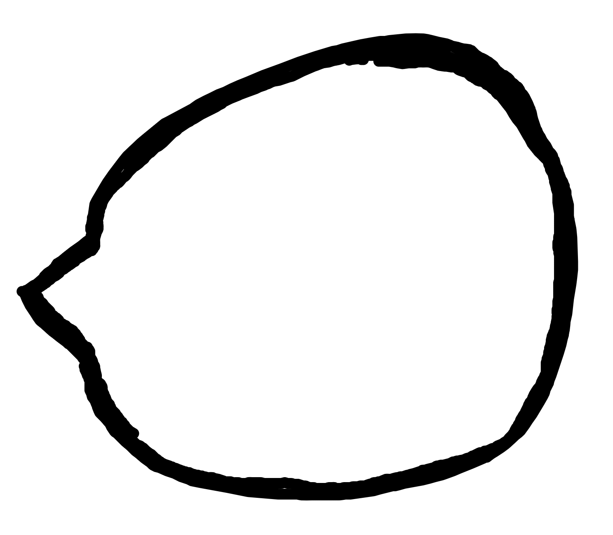

Anything else ...
Freilebende Gummibärchen gibt es nicht. Man kauft sie in Packungen an der Kinokasse. Dieser Kauf ist der Beginn einer fast erotischen und sehr ambivalenten Beziehung Gummibärchen - Mensch. Zuerst genießt man. Dieser Genuß umfaßt alle Sinne. Man wühlt in den Gummibärchen, man fühlt sie.
Eine meiner Lieblingsphantasien, wo es um Gummibärchen geht, ist der Gummibär. Ich will einen riesigen Gummibären. Jeder wahre Gummibärchen-Gourmet wird mich verstehen. Ebenfall phantasieanregend können sie eingesetzt werden zum Aufbau verschiedener »Orgiengruppen- Modelle« oder als »Demonstrationsobjekt für wirbellose Tiere«. Abgesehen vom diabolischen Lustgewinn müßte man die Bärchen gar nicht zerreißen. Sie sind ja durchscheinend. Zu behaupten, daß sich im Gummibärchen das Wesen aller Dinge offenbart, finde ich keinesfalls als gewagt. Wer schon einmal über einem roten Gummibärchen meditiert hat, weiß von diesen Einsichten. Wenn ich das Kino verlasse oder die Packung einfach leergegessen ist, habe ich meist ein Gefühl, als hätte mir einer in den Magen getreten. Hier schläft die gesteigerte Intensität - als deren Ursache den Gummibärchen durchaus der Charakter einer Droge zuerkannt werden kann - ins Negative um, in den Überdruß. In dichter und geraffter Form spiegelt sich im Verhältnis zum Gummibärchen eine menschliche Love-Affair wider. Nie wieder Gummibärchen, denke ich jedesmal. In der Zwischenzeit lächle ich dann über den Absolutheitsanspruch den diese Momente erheben. Schon zu Hause beunruhigen mich wieder Gerüchte über einen Marktvorstoß der Japaner mit Gummireis oder Gummischweinen. Und wieder und wieder geht es mir durch den Kopf: Gummibärchen sind Spitze.